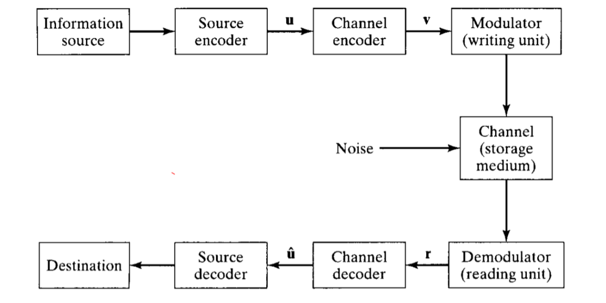
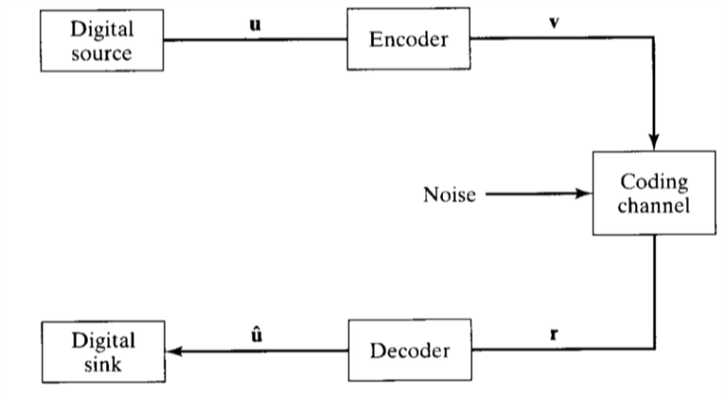
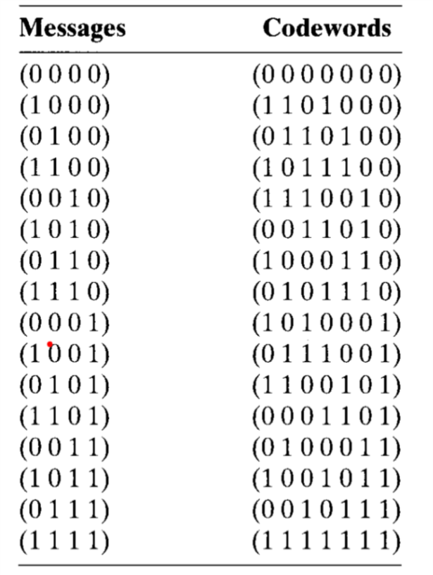
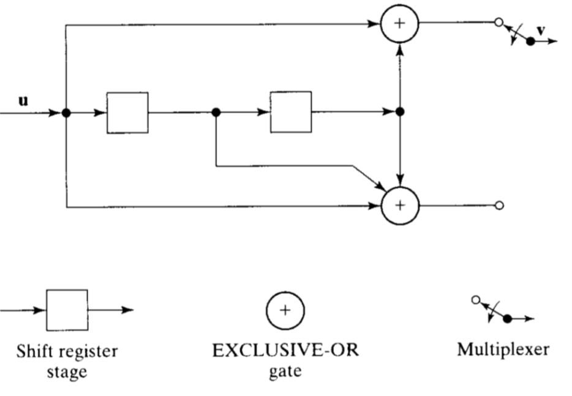
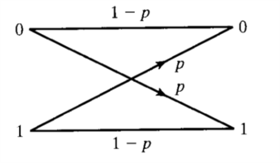
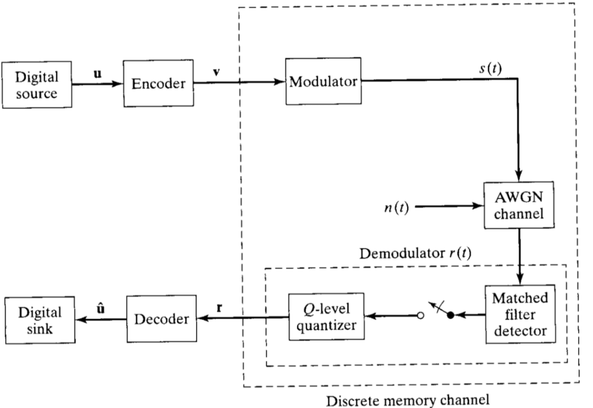

通信与存储系统中的可靠编码
1 引言
近年，随着信息技术的发展，无论是商业，军用还是政府企业，越来越大的通信网络对高效可靠的数字传输以及存储技术的需求日益加强。通信技术和计算机技术的融合是设计通信网络的大势所趋。对于系统设计者一个主要关心的问题是如何有效的在接收端恢复发送端发送的数据。
1948年，香农在其跨时代论文中论证：通过对信息的恰当编码，在信息速率小于信道容量的前提下，有噪信道引入的误差可以降到任意低的水平，且不损失信息速率。自动香农发表该论文之后，已经有大量的高效编译码系统诞生。
数字信息的传输和存储有很多相似之处。他们都涉及从信息源头到目的地的数据搬移。一个典型的数据传输系统可以如图1所示。

图 1: 典型数字传输（存储）系统框图
在图1 中，information source是指信源，信源可以是一个人也可以是一个数字终端。信源发出需要接收端接收的信息。承载信息的可以使连续的波形也可以是离散的符号。信源编码器把信源的输出变成一串二进制序列。我们把这串序列用 \(\mathbf{u}\) 表示。信道编码器有两个作用：
- 最小化表示信源序列的比特数。
- 信源输出可以毫无歧义的用 \(\mathbf{u}\) 恢复。
信源编码不是关注的重点。我只关注信道编码，也就是图 1中的channel encoder和channel decoder。信道编码把信息序列 \(\mathbf{u}\) 转换成一个离散序列 \(\mathbf{v}\) ,我们称 \(\mathbf{v}\) 为码字。在大多数情况下， \(\mathbf{v}\) 也是一个二进制序列（有时候 \(\mathbf{v}\)也可以是非二进制序列）。本书的一个重要关注点就是设计一个好的信道编码器用来对抗信道中的噪声。
离散的符号不适合在物理信道中传输。通常，调制器会将信道编码器的每一个输出符号转变成时长为 \(T\) 秒的波形。 这个波形进入信道，然后受噪声污染。典型的通信息到包括电话线，高频无线电，遥感，微波和卫星通信，光纤网络。典型的存储媒介包括半导体存储器件，磁盘，磁带，CD光盘。每种信道都有自己特有的噪声干扰。在电话线上，干扰主要来自切换开关的冲击噪声，热噪声或者来自其他线路的串扰。在磁盘或者CD，噪声干扰来自磁盘表面的缺陷和灰尘。解调器处理每一个接收到的时长为\(T\)的符号，产生一个离散的或者连续的输出。对应编码器输出，解调器产生的输出为接收序列，用\(\mathbf{r}\)表示。
信道译码器把接收到的序列\(\mathbf{r}\) 译码输出为 \(\hat{\mathbf{u}}\) 。\(\hat{\mathbf{u}}\) 是对原始信息序列 \(\mathbf{u}\) 的一个估计。特别的，译码过程与编码准则和信道中噪声的特点相关。理想情况下（信道编解码方案足够强大），\(\hat{\mathbf{u}}\)是原生序列\(\mathbf{u}\)的再现。信道编解码方案设计中的另一个重要的方面是译码器的设计。相同的编码方案，可以有多种不同的译码方案，不同的方案有不同的优缺点。
本书的重点在于设计信道编解码系统，所以，图1 可以简化为图2

图 2: 简化的编解码系统
整个简化包括三点：
- 信源和信源编码器合并成为一个数字信源，输出为\(\mathbf{u}\) 。
- 调制器，信道和解调器合并成一个编码信道，输入为\(\mathbf{v}\) ，输出为\(\mathbf{r}\) 。
- 信息接收装置简化为信宿，输入为\(\hat{\mathbf{u}}\)。
本书的一个重要的工程问题就是设计一对编译码器，使得：
- 信息在有噪环境中可以尽快的传输；
- 信息经过译码器可以可靠的重现；
- 编译码器的实现尽可能的简单。
2 码的类型
总的来讲一共有两种码：分组码和卷积码。现在看来这是一种笼统的分类方法。越来越多的发现表明分组码和卷积码在很多方面表现出一样的属性，可以看成是一种码。但是，为了便于分析，根据编码的过程我们把这两种码加以区分。
对于分组码，编码器把信息序列分成组，每组长度为 \(k\) 。一个消息可以表示为 \(k\) 维向量 \(\mathbf{u} = (u_{0},u_{1},\ldots,u_{k-1})\) 。所以一共有 \(2^{k}\)个可能的消息。信道编码器把每一个消息\(\mathbf{u}\) 编码为一个 \(n\)维矢量（我们称之为码字） \(\mathbf{v} = (v_{0},v_{1},\ldots, v_{n-1})\)。因此，对应\(2^{k}\)个信息序列，译码器会输出\(2^{k}\)个编码码字。这 \(2^{k}\) 个长度为 \(n\) 的码字构成了一个 \((n,k)\) 分组码。 称比率 \(R = k/n\) 为码率。可以把码率解释为每一个发送符号携带的信息比特。由于编码器输出的 \(n\) 个符号长度的码字只与对应的 \(k\) 比特的输入信息序列有关，所有每一条消息的编码是独立的。编码器是无记忆的，因此可以用组合逻辑电路实现。
在一个二进制码中，每一个码字 \(\mathbf{v}\)也是二进制的。为了让编码系统有效，必须保证每一个信息序列对应一个编码码字，也就是说 \(k \leq n\)，即 \(R \leq 1\) 。 当 \(k < n\) 时，有 \(n-k\) 个冗余比特产生，这些冗余比特赋予线性分组码对抗噪声干扰的能力。对于一个固定的码率 \(R\)， 可以通过增加码长添加更多的冗余比特。比如对于 \(R=1/2\) ，可以是 \(100/200\) 也可以是 \(1000/2000\) 。越长的码，添加的冗余比特越多。图3给出了一个 \((7,4)\) 线性分组码的所有码字。

图 3: (7,4)线性分组码的码字构成
对于卷积码，同样可以接受 \(k\) 比特的信息序列作为输入，并输出 \(n\) 比特的二进制序列作为输出。与分组码不同之处在于，卷积码的输出比特不仅依赖于当前的 \(k\) 比特信息输入，而且依赖于之前的 \(m\) 比特输入。也就是说，卷积码是一种有记忆的码，记忆长度为 \(m\) 。由于卷积码是有记忆的码，其必须用时序电路实现。
二进制卷积码也是通过添加冗余比特来对抗信道噪声，不同的是，二进制卷积码通过增大约束长度来实现更多冗余添加。通常我们可以保持 \(k\) 和 \(n\) 不变，增加约束长度来实现冗余比特的添加。如何利用卷积码的约束长度是工程实现时需要重点考虑的问题。一个 \(k=1\)， \(n=2\) ， \(m=2\) 的卷积码如图4所示。

图 4: \(k=1\)， \(n=2\) ， \(m=2\) 的卷积码
对于图4 所示的编码器，假设输入为 \(\mathbf{u} = 1101000\cdots \) (左边的信息比特最早进入编码器)， 假设编码器上边的输出是第一个输出比特，下面的输出是第二个编码比特，则 \(\mathbf{u}\) 对应的输出 为 \(\mathbf{v} = (11,10,10,00,01,11,00,00,00,\cdots)\)
3 调制和编码
调制器的作用是把编码器输出的数字消息变成时长为 \(T\) 波形发射出去。在二进制编码系统中，调制器必须生成两个信号 \(s_{1}(t)\) 和\(s_{2}(t)\) 。 \(s_{1}(t)\)用于发送编码比特 "1"；\(s_{2}(t)\)用于发送编码比特"0" 。对于宽带系统，最优的选择是：
\begin{eqnarray*} s_{1}(t)&=& \sqrt{\frac{2E_{s}}{T}}\cos{2\pi f_{0}t}, 0\leq t\leq T \\ s_{1}(t)&=& \sqrt{\frac{2E_{s}}{T}}\cos{2\pi f_{0}t + \pi}, 0\leq t\leq T \\ &=& -\sqrt{\frac{2E_{s}}{T}}\cos{2\pi f_{0}t}, 0\leq t\leq T \\ \end{eqnarray*}其中，载波频率是 \(1/T\) 的倍数。 \(E_{s}\) 是每一个信号的能量。因为载波相位 \(\cos 2\pi f_{0}t\) 仅仅在 \(0\)和 \(\pi\) 之间切换，所以这种调制方式叫做二相移键调制（Binary Phase shift keying, BPSK）。在任何通信系统中存在的一种噪声叫做加性高斯噪声（additive white Gaussian noise, AWGN）。如果发送信号为 \(s(t)\) 那么接收信号可以表示为： \[ r(t) = s(t) + n(t)\] 其中， \(n(t)\) 是高斯随机过程，单边功率谱为 \(N_{0}\) 。在通信系统中还会有其他形式的干扰存在，比如多径传输。在多径传输过程中，接收到的信号在某些时间间隔中会出现整体衰落。这些衰落可以通过在 \(s(t)\)上添加一个比例因子来建模。
在接收端，解调器针对 \(T\) 时间间隔内的接收信号会产生一个输出。这个输出可能是一个实数，也可也能是预先定义的一个集合中的某一个元素。最优的接收机通常包含一个匹配滤波器或者相关检测器，在匹配滤波器（或者相关检测器后面）跟着一个采样器，这个采样器每 \(T\) 秒产生一个输出。对于二进制调制，相干检测的采样输出为：
\begin{equation} \label{eq:20161113equ01_03} y = \int_{0}^{T}r(t) \sqrt{\frac{2E_{s}}{T}}\cos{2\pi f_{0}t dt} \end{equation}这些没有经过量化的采样输出可以直接送到译码器中进行译码。在这种情况下，译码器必须能够处理未经量化的实数。实际上通常的做法是对这些采样输出的实数量化输出（目前比较经典的是4比特或者6比特），然后送入译码器。
在BPSK中，我们实用两个信号来传输信息，但是如果一共有 \(M=2^{l}\) 个信道波形可供选择，编码器输出的编码比特首先要分成一个新的序列，序列中的元素包含 \(l\) 个二进制比特构成的字节（这里的字节和计算机的字节有所不同，在计算机科学中一个字节一般是8个比特，在这里我们称 \(l\)个比特构成的二进制序列也为一个字节 ）。我们把每 \(l\) 个比特构成的一个字节成为一个符号，一共有 \(M=2^{l}\) 个符号。每个符号映射为符号集 \(\mathcal{S}\) 中的一个符号。每个符号是一个脉冲波形，时长为 \(T\) 。我们把这样的映射方式成为 MPSK。在MPSK调制中， 一共有 \(M\) 个相位的正弦信号。每个信号有相同的能量 \(E_{s}\) ，但是不同的相位 \(\phi_{i}\) ，可以表示为 \[s_{i}(t) = \sqrt{\frac{2E_{s}}{T}} \cos{(2\pi f_{0}t + \phi_{i})}, 0\leq t \leq T\] 其中， \(\phi_{i} = 2\phi(i-1)/M, 1\leq i \leq M\) 。由于MPSK具有恒定的包络，所以又叫恒包络调制。
如果解调器在给定时间周期内的输出仅仅依赖于该时期的发射信号，与之前发射的信号无关，这个信道是无记忆的，我们称这样的信道是无记忆信道。对于无记忆信道，我们可以把 \(M\) 进制调制器，物理信道，以及 \(Q\) 进制解调器一起看成一个离散的无记忆信道(Discrete memoryless channel, DMC)。一个DMC可以被转移概率完全描述。 \[P(j|i), 0\leq i \leq M-1, 0\leq j \leq Q-1\] 其中 \(i\) 表示调制器的输入符号， \(j\) 表示解调器的输出符号。 \(P(j|i)\) 表示已知发送为 \(i\) 的条件下，接收为 \(j\) 的概率。
考虑如下通信系统：
- 调制方式是BPSK；
- 噪声幅度的分配是对称的；
- 解调器的输出量化为两个级别，即 \(Q=2\).

图 5: BSC信道模型
该通信系统的信道成为二进制对称信道 (Binary Symmetri Channnel, BSC)，如图所示。BSC信道是一个非常简单但是重要的信道模型。该信道模型仅仅用一个转移概率 \(p\) 即可描述。转移概率可以通过发射信号，噪声功率分布以及解调器的输出量化级别来计算。比如，在AWGN信道下使用BPSK调制，采用最优相干检测和二进制输出量化，BSC新到的转移概率就是未编码的BPSK 比特出错的概率（发射信号等概率发射）。
\begin{equation} \label{eq:20161113equ01_04} p = \mathcal{Q} (\sqrt{2E_{s}/N_{0}}) \end{equation}其中 \(\mathcal{Q}\) 函数定义为： \[\mathcal{Q}(x) = \frac{1}{\sqrt{2\pi}} \int_{x}^{\infty} e^{-y^{2}/2}dy\] \(\mathcal{Q}\) 函数的一个上界为： \[\mathcal{Q}(x) \leq \frac{1}{2} e^{-x^{2}/2}, x\geq 0\] 如果调制器的输出和解调器的输出都采用二进制，即 \(M=Q=2\) ，则称解调器的判决为硬判决。硬判决的调制器和译码器实现起来都非常简单。当 \(Q>2\) 或者解调器的输出不经量化，译码器必须能够接受多级输入（或者为量化的实数输入），我们称这样的译码为软译码。虽然软译码的复杂度比硬译码复杂度要高，但是软译码可以带来相当大的系统增益（AWGN信道下，典型的增益大约为2-3dB）。
假设输入到调制器的符号来自有限的离散符号集 \(X = \{ x_{0},x_{1},\ldots, x_{M-1}\}\) ，解调器的输出为不经量化的实数。调制器和物理信道以及解调器可以简化为离散输入连续输出的信道。信道的输出为一个随机变量 \(y\) ， \(y\) 的值可以是任意实数，即 \(y\in \{-\infty,+\infty\}\)。如果物理信道是AWGN信道，（噪声均值为0，单边功率谱为 \(N_{0}\) ） ，则信道输出是一个高斯随机变量，均值是0，方差是 \(\sigma^{2} = N_{0}\)。此时,我们获得了一个离散输入连续输出的无记忆信道，这个信道可以用 \(M\) 组条件概率 \(p(y|x),x\in \{0,1,\ldots,M-1\}\) 完全描述。特别的，对于 \(M=2,x\in \{0,1\}\)。我们就有一个二进制输入，连续输出的无记忆高斯信道，并且这个信道可以用两个条件概率密度函数：
\begin{eqnarray} \label{eq:20161113equ01_06} p(y|x=0)&=& \frac{1}{\sqrt{\pi N_{0}}} e^{-\frac{(y+\sqrt{E_{s}})^{2}}{N_{0}}} \\ p(y|x=1)&=& \frac{1}{\sqrt{\pi N_{0}}} e^{-\frac{(y-\sqrt{E_{s}})^{2}}{N_{0}}} \end{eqnarray}其中， \(E_{s}\) 是信号能量。
如果解调器的输出不仅与当前的发送信号相关还与之前的发送信号相关，那么这样的信道就是有记忆的信道。衰落信道就是有记忆信道的典型例子，因为在衰落信道中多径信道传输破坏了一个 \(T\) 到另一个 \(T\) 内信号的独立性。有记忆信道的建模是一件很困难的事情，针对这些新到的编码与其说是一门科学，不如说是一门艺术。
在数字通信系统中，两个重要的参数是信息的传输速率和系统带宽。由于一个符号的持续时间是 \(T\) 秒，所以传输速率为 \(1/T\) 。在一个编码系统中，假设码率是 \(R=k/n\) , \(n\) 个编码比特对应 \(k\) 个信息比特，对应的信息传输速率为 \(R/T\)比特每秒 。事实上，很多通信系统的传输速率受系统带宽的影响。为了尽量降低信号畸变，一个通信速率为 \(1/T\)比特每秒的无编码通信系统（\(R=1\) ）需要的系统带宽为 \(W = \frac{1}{2T}\) 。对于一个编码系统（\(R<1\) ）, 数据速率是 \(R/T = 2RW\)比特每秒, 也就是说信道编码会带来有效通信速率的降低。从另一个方面讲，为了维持通信速率不变，则系统带宽需要变成原来的 \((1+R)\) 倍。对于BPSK系统来讲，需要扩展带宽。如果不想要任何的信号畸变同时不扩展带宽，则BPSK调制是不可行的。所以带宽受限系统应该使用频谱效率更高的调制方式，而不是BPSK。
4 最大似然译码
AWGN信道下的编码系统如图6 所示。

图 6: AWGN信道下的编码系统
对于线性分组码，信源输出为 \(k\) 比特二进制序列 \(\mathbf{u}\) , 编码器输出为 \(n\) 比特编码序列 \(\mathbf{v}\) ，在接收端解调器输出为 \(Q\)级量化的长度为 \(n\)的接收信息 \(\mathbf{r}\) ，译码器输出长度为 \(k\) 的二进制序列 \(\hat{\mathbf{v}}\) 。对于卷积码， \(\mathbf{u}\)是长度为\(kh\)的二进制序列，输出 \(\mathbf{v}\)是长度为 \(n(h+m)\)的编码序列。注意在这样的场景下系统码率是 \(kh/(nh + nm)\)，而不是 \(k/n\)。这是因为 \(nm\)个编码比特是用于冲刷编码器的寄存器状态，使其回到全零状态，便于译码器译码。在之后我们可以看到，咬尾卷积码有效的消除了这些额外的编码比特。
整个译码过程是译码器根据收到的 \(\mathbf{r}\)回复出原始信息序列\(\mathbf{u}\)的过程。当然译码器只能得到\(\mathbf{u}\)的一个估计 \(\hat{\mathbf{u}}\)。我们知道在信息序列\(\mathbf{u}\)和 \(\mathbf{v}\)之间有一一对应的关系，所以只有当译码器生成的码字\(\hat{\mathbf{v}}\)和发射端编码器生成的\({\mathbf{v}}\)一致，才会有\(\hat{\mathbf{u}}\)和\({\mathbf{u}}\)一致。那么如何找到 \(\hat{\mathbf{v}}\)呢？我们根据\({\mathbf{r}}\)来找\(\hat{\mathbf{v}}\)。在根据\(\hat{\mathbf{r}}\)找\(\hat{\mathbf{v}}\)的过程中，当\(\hat{\mathbf{v}} \neq \mathbf{v}\)时，定义条件差错概率。
\begin{equation} \label{eq:0107} P(E|\mathbf{r}) \triangleq P(\hat{\mathbf{v}} \neq \mathbf{v}| \mathbf{r}) \end{equation}所以译码器的差错概率为
\begin{equation} \label{eq:0108} P(E) = \sum_{\mathbf{r}} P(E|\mathbf{r}) P(\mathbf{r}) \end{equation}对于译码器，\(P(\mathbf{r})\)是独立于译码准则的（因为\(\mathbf{r}\)在译码器之前就已经生成了）。因此对于一个最优的译码器必须最小化\(P(E)\)等效于对于所有的\(\mathbf{r}\)最小化\(P(E|\mathbf{r})=P(\hat{\mathbf{v}} \neq \mathbf{v}|\mathbf{r})\)。等效于最大化\(P(\hat{\mathbf{v}} = \mathbf{v}|\mathbf{r})\)，即对于所有的\(\mathbf{r}\)到对应的\(\mathbf{v}\)，最大化\(P(\mathbf{v}|\mathbf{r})\)。 根据条件概率公式：
\begin{equation} \label{eq:0109} P(\mathbf{v}|\mathbf{r}) = \frac{P(\mathbf{r}|\mathbf{v})P(\mathbf{v})}{P(\mathbf{r})} \end{equation}假设所有的信息序列\(\mathbf{u}\)（对应的\(\mathbf{r}\)）是等概的，那么最大化 式\ref{eq:0109}等效于最大化 \(P(\mathbf{r}|\mathbf{v})\)。我们成功的把计算后验概率转化成了计算先验概率！
对于DMC，有
\begin{equation} \label{eq:0110} P(\mathbf{r}|\mathbf{v}) = \prod_{i} P(r_{i}| v_{i}) \end{equation}我们称最大化式\ref{eq:0110}的译码器为最大似然译码器。另外由于 \(\log(x)\)是单调递增函数，所以我们可以把乘法变成对数域的加法。
\begin{equation} \label{eq:0111} \log P(\mathbf{r}|\mathbf{u}) = \sum_{i}\log(P(r_{i}|v_{i})) \end{equation}最大似然译码器会选择一个最大化式\ref{eq:0111}的\(\mathbf{v}\)作为最终的码字。
现在我们考虑BSC信道下的最大似然译码。在BSC信道下，接收信号受到信道噪声的影响，出现错误的概率为 \(p\)，正确传输的概率为\(1-p\)。 对于接收码字 \(\mathbf{r}\)和候选码字\(\mathbf{v}\), 汉明距离为\(d(\mathbf{r},\mathbf{v})\)。则根据式\ref{eq:0111}，
\begin{eqnarray} \label{eq:0112} \log P(\mathbf{r}|\mathbf{u}) &=& d(\mathbf{r},\mathbf{v})\log(p) + (n- d(\mathbf{r},\mathbf{v}) \log(1-p) \\ &=& d(\mathbf{r},\mathbf{v} ) \log(\frac{p}{1-p}) + n \log(1-p) \end{eqnarray}在式(\ref{eq:0112})中， \(\log\frac{p}{1-p} < 0 \) \(p < 1/2\)。另外 \(n\log(1-p)\)对于所有的 \(\mathbf{v}\)是常数。所以对于BSC信道来说，MLD准则就是选择最小的 \(d(\mathbf{r},\mathbf{v} )\)。我们称BSC信道的MLD译码器为最小距离译码器。